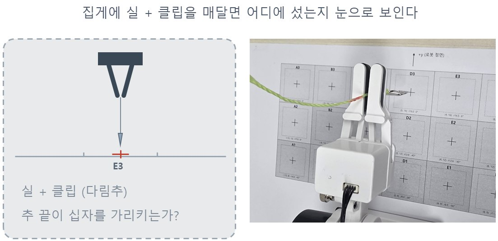
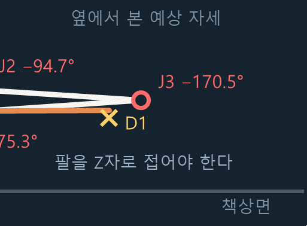
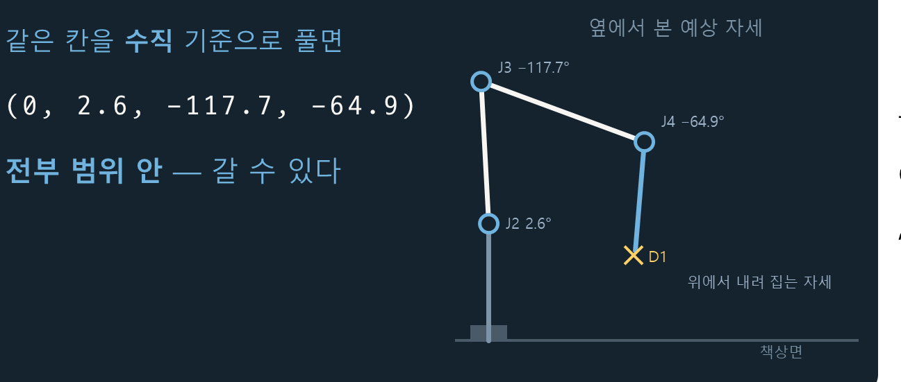
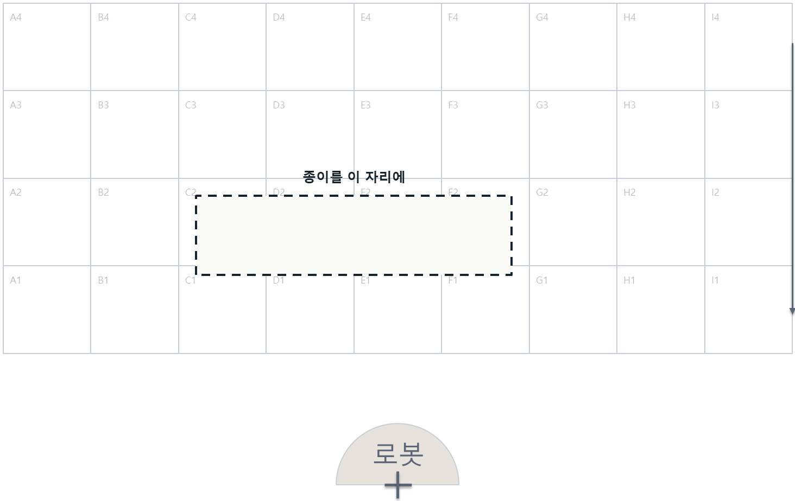
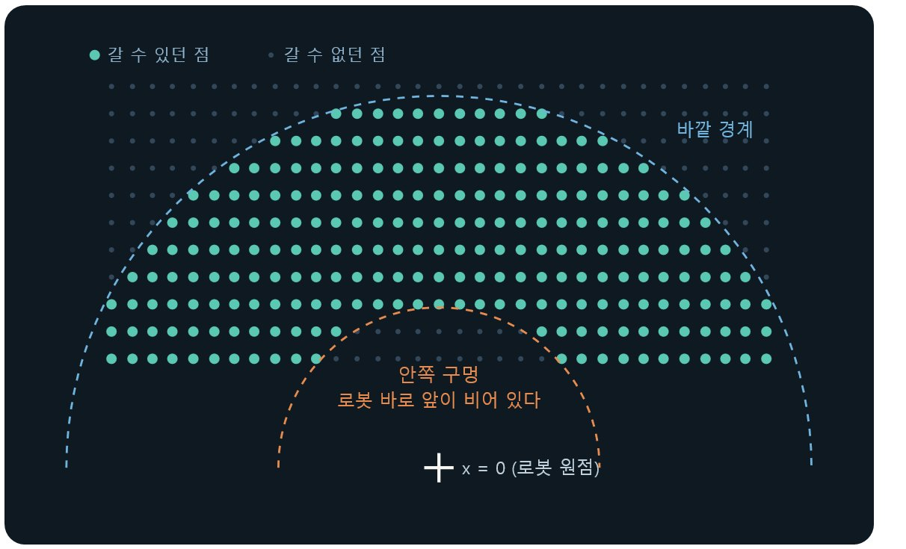
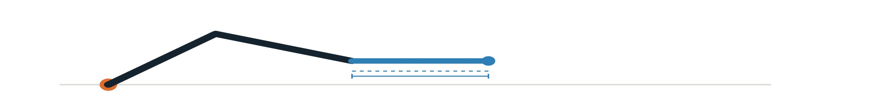
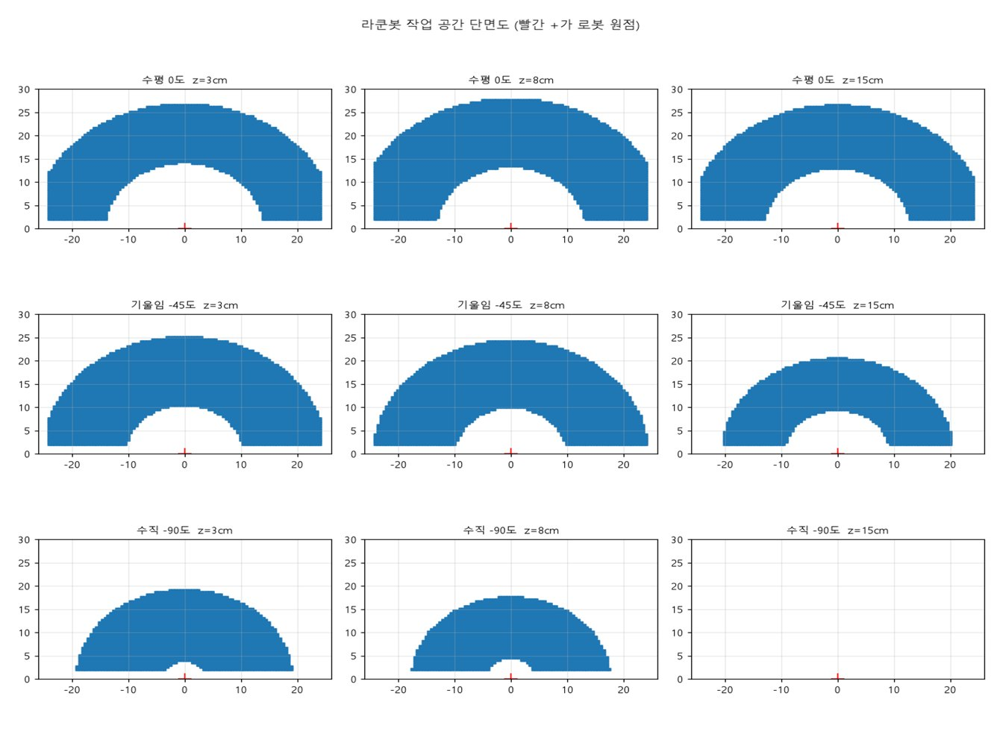
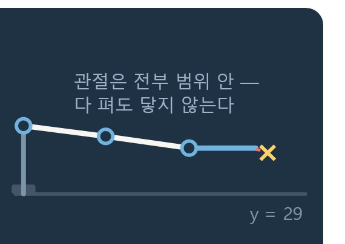
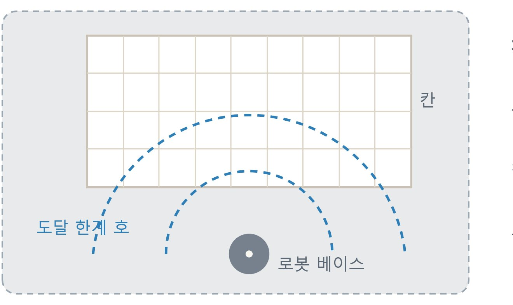

주제 3 · 3~4차시
작업 공간
갈 수 있는 곳과 없는 곳, 그 경계는 어디인가
실제 구분 차시보다 많은 시간이 소요될 수 있음.
오늘의 좌표 제어 명령어 명령어
# ── 지금까지 배운 명령 ── degree_to(j1, j2, j3, j4) # 각도 네 개로 자세 만들기 (주제 2) encoder(-1) / xyz() # 각도 읽기 / 집게 끝 좌표 읽기 (주제 1~2) # ── 오늘 새로 배우는 명령 ── move_to(x, y, z, 속도) # 집게 끝을 그 좌표로 — 각도는 로봇이 알아서 can_move_to(x, y, z) # 가기 전에 “갈 수 있어?” 하고 묻기 (안 움직임)
지금까지는 각도 네 개를 우리가 하나하나 정해 줬다.
오늘부터는 가고 싶은 곳만 말하면 된다 — 각도 계산은 로봇의 몫이다.
새로 외울 것은 보내기(move_to)와 묻기(can_move_to), 딱 두 개다.
교사 노트
명령어 카드 30초 → tryxyz 실습으로. '우리가 하던 각도 계산을 로봇이 대신한다'가 이 주제 전체(역기구학)의 예고입니다.
좌표로 움직여보기 실습 1 · 그대로 실행
from roboid import * raccoon = Raccoon() raccoon.move_to(0, 14, 10) # 앞 14cm, 높이 10cm raccoon.beep() # “삑” — 동작 하나 끝 wait(1000) raccoon.move_to(8, 14, 10) # 오른쪽으로 8cm raccoon.beep() wait(1000) raccoon.move_to(-8, 14, 10) # 왼쪽으로 raccoon.beep() wait(1000) raccoon.degree_to(0, -10, -140, 60) # Home raccoon.dispose()
지난 시간에는 관절 각도 네 개로 로봇의 자세를 만들었다.
이번에는 각도 설정 없이 좌표 세 개로 집게 끝이 갈 지점을 지정해보자.
[관찰해보기]
각도를 하나도 정하지 않았는데, 관절 네 개가 알아서 움직이는지?
좌우로 옮길 때 어느 관절들이 따라 도는지?
[안전] 실행 전 팔 주변 30cm 를 비운다.
좌표에 도달하기 위해 필요한 각도는 누가 정했을까?
교사 노트
설명 없이 실행부터. "각도는 누가 정했나"는 여기서 답하지 않습니다 — flip 슬라이드에서 회수합니다.
좌표를 바꿔 네 곳 보내기 준비물 : 작업지도 A3 or B4
from roboid import * raccoon = Raccoon() raccoon.move_to(-16, 16, 1.5) # 앞 14cm, 높이 10cm raccoon.beep() # “삑” — 동작 하나 끝 wait(1000) raccoon.move_to(0, 20, 2) # 책상 바로 위 2cm, 앞 20cm raccoon.beep() wait(1000) raccoon.move_to(0, 5, 10) # 로봇 바로 앞 5cm raccoon.beep() wait(1000) raccoon.move_to(0, 30, 10) # 아주 먼 곳 raccoon.beep() wait(1000) raccoon.dispose()
raccoon.move_to(0, 14, 10) # ← 이 세 좌표를 바꾼다
작업지도 A3 칸 위 10cm — (-16, 16, 1.5)
책상 바로 위 2cm, 앞 20cm — (0, 20, 2)
로봇 바로 앞 5cm — (0, 5, 10)
아주 먼 곳 — (0, 30, 10)
3번과 4번에서 이상한 일이 생긴다
— 팔이 가지 않거나, 엉뚱한 곳에 멈춘다.
왜 특정 좌표에서만 동작하지 않았을까?
먼 좌표는 거리의 제약이 있지만 가까운 좌표로 안 가는 것은 왜일까?
교사 노트
3·4번의 실패가 핵심 경험입니다. "고장났어요"라는 말이 나오면 "로봇은 멀쩡합니다. 왜 안 가는지가 오늘 주제예요"로 받으세요. move_to 가 안 가는 좌표를 받았을 때의 행동(무시/이상 동작)은 기기·버전에 따라 다를 수 있으니 수업 전에 한 번 실행해 확인해 두세요.
갈 수 있을지 O/X 예상하기 실습 3 · 실행 전에 O/X
| 실행할 줄 (좌표만 바꾼다) | 내 예상 (O/X) | 확인 결과 |
|---|---|---|
| can_move_to(0, 20, 10) | ||
| can_move_to(0, 5, 10) | ||
| can_move_to(-16, 16, 10) | ||
| can_move_to(0, 30, 10) |
print(raccoon.can_move_to(0, 20, 10)) # True / False — 가 보지 않고 묻는다. 좌표 세 개만 바꿔 네 번 실행
먼저 네 칸 모두 O/X 예상을 적고, 그 다음에 확인한다.
몇 개 맞혔나? 틀린 게 있다면 — 우리는 아직 로봇이 갈 수 있는 영역의 모양을 모르는 것이다.
교사 노트
정답: O, X, O, X. 특히 (0, 5, 10)을 O로 예상하는 학생이 많습니다 — "가까우니까 당연히 되겠지"가 깨지는 순간이 이 활동의 목적입니다.
표의 흐린 글자는 그대로 두고 주황 자리(좌표 세 개)만 바꾸면 됩니다 — breakit 등 다른 변형 표와 같은 규약입니다.
can_move_to 는 여기서 도구로만 씁니다. 이 함수의 정체(책상을 모른다는 것)는 ask 슬라이드에서 다룹니다.
가까운데 왜 안 될까? 생각해보기
(0, 30, 10) 이 안 되는 건 이해가 된다 — 팔보다 먼 곳이니까.
그런데 (0, 5, 10) 은 로봇 코앞인데도 안 된다.
가까워서 안 되는 곳이 있다
되는 곳과 안 되는 곳 사이 어딘가에 경계가 있다. 안쪽에 하나, 바깥쪽에 하나.
이번 주제에서 그 경계를 직접 재서 단면도로 그리고, 왜 그 모양인지까지 설명한다.
move_to 에 좌표만 줬는데 팔이 알아서 갔다 — 각도는 누가 정했을까?
“안 된다”는 판정은 어디서 나올까? 다음 장에서 그 정체를 본다.
교사 노트
미션의 "안 간 좌표" 기록과 O/X 표를 칠판에 모으면 "안쪽에도 경계가 있다"가 교실 전체의 데이터가 됩니다.
좌표에서 각도로, 반대로 가볼까?
지난 시간에는 각도 네 개를 넣어 손끝 좌표를 구했다.(순기구학)
오늘은 좌표를 목표로 각도를 역산하는 것, 역기구학이라고 부른다.
방금 move_to 에 좌표만 주었는데 팔이 갔다. 로봇이 이 계산을 이미 하고 있다는 뜻이고, “안 된다”는 판정도 여기서 나온다.
이쪽은 사정이 다르다.
1. 답이 아예 없을 수 있다 — 팔이 닿지 않는 곳은 어떤 각도 조합으로도 못 간다.
2. 답이 여러 개일 수 있다 — 팔꿈치를 위로 꺾어도, 아래로 꺾어도 손끝이 같은 점에 온다.
수학의 역함수와 같은 관계 — 일대일이 아닌 함수는 깔끔하게 뒤집히지 않는다.
계산 자체는 컴퓨터와 이미 구현된 코드가 해 준다.
우리는 “어디까지 갈 수 있고, 왜 거기서 막히는가” 다. 생각과 현실의 동작의 차이에 초점을 둔다.
교사 노트
역기구학의 수학(코사인법칙, atan2)은 다루지 않습니다. xyz_to_degree() 를 도구로 쓰고, 그 결과의 성질만 관찰합니다.
관절은 어디까지 움직일까? [미션] 숫자만 바꿔서 · ch3_8p.py
각도 숫자만 바꿔 실행하며, False 가 나오는 지점을 찾는다.
can_degree_to 는 로봇을 움직이지 않고 묻는다 — 되는 값과 안 되는 값 사이를 반씩 좁히면 빠르다.
출발 힌트 — 0° 는 어느 관절이든 항상 된다. ±180° 는 어느 관절도 안 된다. 그 사이 어딘가에 경계가 있다.
from roboid import *
raccoon = Raccoon()
j = 2 # ← 조사할 관절 (1~4)
각도 = 30 # ← 이 숫자만 바꾼다
print(j, "번", 각도, "도 →",
raccoon.can_degree_to(j, 각도))
raccoon.dispose()| 관절 | 하는 일 | 탐색 범위 | 내가 찾은 범위 |
|---|---|---|---|
| J1 | 좌우 회전 | −150 ~ +150° 사이 | |
| J2 | 어깨 | −90 ~ +90° 사이 | |
| J3 | 팔꿈치 | −180 ~ +180° 사이 | |
| J4 | 손목 | −150 ~ +150° 사이 |
[참고] 범위를 넘는 로봇 동작 명령은 조용히 무시된다
[관찰해보기] J2 와 J3 는 왜 한쪽으로 치우쳤나? — 사람 팔처럼, 어깨는 위로 조금 · 팔꿈치는 접히기만.
관절별 가동 범위가 작업 공간의 모양을 결정한다.
교사 노트
정답 (교사용 — 화면에 없음): J1 −120 ~ +120° · J2 −90 ~ +30° · J3 −150 ~ 0° · J4 −105 ~ +105°. 학생이 다 찾은 뒤 칠판에 적어 대조하세요 — 먼저 주면 "왜 J2 는 +30 까지밖에 안 되지?"라는 질문이 사라집니다. 예시 코드는 lessons/ch3_8p.py 로도 배포되어 있습니다. 반씩 좁히기(이진 탐색)는 여기서 이름 붙이지 말고 edge 장에서 회수하세요.
칸 이름으로 보내보기 작성&실행 ch3_3p.py
from roboid import *
X = [-16, -12, -8, -4, 0, 4, 8, 12, 16] # A3 열 A~I
Y = [8, 12, 16, 20] # 행 1~4
cell = "E3" # ← 바꿔 볼 칸 이름
x = X[ord(cell[0]) - ord("A")] # 글자 "E" → 몇 번째 열인지
y = Y[int(cell[1]) - 1] # 숫자 "3" → 몇 번째 행인지
raccoon = Raccoon()
wait(1000)
raccoon.move_to(x, y, 10) # 10cm = 수평 구역 접근 높이
wait(1500)
print(cell, (x, y), "→ 실제", raccoon.xyz()) # 목표와 실측 대조
raccoon.dispose()E3 = 다섯째 열, 셋째 행 → (0, 16).
칸 이름을 좌표로 바꾸는 줄 두 개면 매트의 36칸 어디로든 보낼 수 있다.
실과 클립의 총 길이는 9cm,
접근 높이 10cm로 고정하고 실습을 진행

교사 노트
코드를 그대로 받아 적어 실행하게 하세요. cell 을 "A1", "I4" 등으로 바꿔 가며 돌려 봅니다. 이 사진 한 장이 "좌표"를 "실제 자리"로 바꿔 줍니다. 추 끝과 십자가 겹치는 순간을 찍으세요. 접근 높이 10cm 를 지금 설명하지 마세요. rules 슬라이드에서 TILT_RULES 로 회수합니다. 가까운 칸(E1 등)으로 바꾸면 수평으로는 닿지 않아 움직이지 않습니다. 그 실패가 tiltdep 슬라이드의 도입이 됩니다 — 일부러 겪게 해도 좋습니다.
손으로 가르쳐보기 실습 0 · 코드 없이 · 01_티칭_플레이백.py
오늘의 첫 실습에는 코드가 없다.
extras/01_티칭_플레이백.py 를 실행하면 팔의 힘이 빠진다 — 손으로 잡고 움직일 수 있다.
자세를 만들 때마다 Enter 로 저장, p 를 누르면 로봇이 그대로 따라 한다.
집기 → 들기 → 옮기기 → 놓기를 손으로 가르친다 (o/c버튼으로 집게)
p버튼으로 학습시킨 동작 재생
이제 블록을 옆 칸으로 옮기고 다시 p — 어떻게 될까?
3번에서 로봇은 아까 외운 자세를 그대로 되풀이한다 — 블록은 옆 칸에 있는데 빈 자리에서 집게를 닫는다(허공 집기).
매번 내가 학습을 시킬 수 없는데 이 문제를 어떻게 해결할 수 있을까?
오늘 배우는 코드는 숫자 두 개만 바꾸면 어느 칸이든 갈 수 있다.(자동화의 중요성)
r 을 누르면 거꾸로 재생된다 — 왜 거꾸로는 공짜일까? (답: 동작의 정체가 리스트라서)
교사 노트
extras/01_티칭_플레이백_실기기.py 로 진행합니다 — 실행하면 "로봇을 연결했나요?"라고 묻는데 y 를 입력합니다. 산업 현장의 "티칭 펜던트"가 하는 일이 정확히 이것입니다 — 공장 로봇 대부분이 이렇게 가르쳐집니다. "허공 집기"가 trypick(다음 장)의 동기입니다 — 코드는 수정 가능하다는 것. 역재생(r)은 리스트/스택 이야기라 9차시 하노이와 연결됩니다.
가기 전에 물어볼까?
can_move_to(0, 20, 5) → True can_move_to(0, 20, 0) → True ← 책상 높이인데도 can_move_to(0, 20, −3) → False ← 관절이 안 닿아서
가 보지 않고 물어볼 수 있다 — 편리하다. 그런데:
둘째 줄, z = 0 은 책상 표면인데 True 다.
셋째 줄의 False 도 책상 때문이 아니라 관절이 안 꺾여서다.
이 함수가 보는 것은 관절 범위 안인가 하나뿐이다. 로봇에게는 책상이라는 개념이 없다.
“갈 수 있다” ≠ “가도 된다” — 충돌을 막는 일은 우리 몫으로 남는다.
교사 노트
좋은 토론거리입니다. 라이브러리는 어디까지 책임져야 하는가? 안전 장치를 라이브러리에 넣으면 무엇이 불편해질까?
같은 좌표, 왜 다른 답일까? 3차시 · 왜 안 될까
D1 칸 (0, 8) 을 수평 기준으로 풀면
(0, −94.7, −170.5, 175.3)
세 관절이 한계 초과 — 갈 수 없다


같은 점 (0, 8) 인데 한 번은 거부당하고, 한 번은 이동한다.
좌표 세 개만으로는 자세가 정해지지 않는다
— 집게를 어느 방향으로 향한 채 갈지가 더 필요하다.
역기구학은 그 방향을 지금 손목이 향한 쪽으로 가정해 버린다.
그래서 순서가 있다 — 기울기 먼저, 좌표는 그 다음.
이 순서를 모르면
“어떤 칸은 되고 어떤 칸은 안 된다” 에서 끝없이 헤매게 된다.
교사 노트
이 성질을 모르면 "왜 어떤 칸은 되고 어떤 칸은 안 되지?"에서 영원히 헤맵니다. 주제 4의 집기 시퀀스가 기울기를 먼저 잡는 이유이기도 합니다.
두 그림은 같은 축척의 옆모습이고, 관절 위치는 실제 역기구학 해(마디 8.25/10/10/8cm)로 계산한 것입니다. 왼쪽은 D1 에 수평으로 닿으려면 팔을 Z자로 접어야 해서 세 관절이 전부 빨간색(한계 초과)입니다.
로봇에게 펜을 쥐여 준다면? 3차시 · 펜을 든 로봇
오늘은 집게에 펜을 물린다. 블록을 옮길 때와는 준비물도, 갈 수 있는 방향도 다르다.
닿는 높이를 재고(①), 같은 명령으로 점을 찍어 자로 재서(②) 로봇의 오차를 본다(③).
준비물
펜(연필·사인펜) · 고무줄 2개 · 종이와 테이프 · 자.
펜은 집게 힘만으로는 눌리는 순간 미끄러진다.
고무줄로 집게에 묶고, 집게 바로 아래 펜 몸통에도 한 번 감아 턱을 만든다.
먼저 재는 것
펜을 물리면 프로그램이 집게 끝에서 펜 끝까지 몇 cm 인지 묻는다. 자로 재서 넣으면 쓰는 높이를
정해 준다 — z 는 집게 끝 높이. 펜 끝이 아니다.
더 맞추려면 02_공구_높이재기.py 로
가까운 쪽·먼 쪽 두 자리를 잰다.
안 되는 것
펜을 내린 채로 움직이지 않는다 — 점만 찍는다. 선을 그으면 관절이 따로 도착해 끝이 긁힌다.
종이는 매트 2~3행(y=12~16) 에 둔다. 다 쓰면 home() 말고 pen_park() 으로 빠져나온다.
교사 노트
**이 장이 3차시 둘째 시간의 첫 장입니다.**
**고무줄을 미리 나눠 주세요.** 집게 힘으로 쥐면 반드시 미끄러집니다 — 학생이 스스로 겪게 두면 20분이 날아갑니다.
펜 높이 재기는 가상 모드로는 뜻이 없습니다. 실기기가 있는 조만 ①단계를 하고, 없는 조는 Z_DRAW 를 받아 적어 가상으로 돌리면 됩니다.
로봇이 만든 눈금자 — 자로 재서 검증한다 눈금자 · 02_눈금자.py
로봇에게 2.00cm 간격으로 점을 찍으라고 시킨다. 그러고 그 점들을 진짜 자로 잰다. 2.00 이 나오는가?
같은 명령으로 한 줄 더 찍는다. 먼저 눈으로 본다 — 두 줄의 점이 세로로 나란한가? 나란하지 않다면 같은 명령인데 자리가 다르게 나온 것이다.
간격 = 2.0 # 명령값 — 이 숫자를 자로 잰다
눈금수 = 7 # 점 7개 -> 간격 6칸
시작 = (4.0, 12.0)
줄간격 = -1.2 # 2회차는 한 줄 아래에
회차 = 2 # 같은 명령을 두 번
for n in range(회차):
한줄_찍기(arm, y, z) # x 로만 움직이며 점 7개
y += 줄간격치우침 (bias)
산포 (scatter)
명령값과 평균의 차이. 늘 2.05 가 나온다면 항상 같은 쪽으로 틀리는 것이라 보정으로 지울 수 있다.
1회차와 2회차의 차이. 매번 다르게 틀리는 것이라 보정으로 못 없앤다. 평균을 내거나, 보고 고치거나, 견디게 설계한다.
왜 안 맞나 — 인쇄 배율 · 각도 분해능 · 백래시 · 팔 처짐 · 반경 증폭 · 종이와 펜 · 앞의 둘은 사람이, 나머지는 로봇이 안고 가는 몫
교사 노트
**자를 꼭 쥐여 주세요.** 숫자를 코드가 찍어 주면 활동이 사라집니다. 화면에 기록 양식(칸 0-1 … 평균 … 최대-최소)이 나오니 공책에 옮겨 적게 하세요.
눈으로 보는 단계를 건너뛰지 마세요. 두 줄의 점이 어긋난 것은 자 없이도 보입니다. 그 어긋남이 바로 '산포' 이고, 다음 장의 출발점입니다.
반경 증폭을 확인하려면 시작 y 를 12에서 16으로 바꿔 다시 재게 하세요 (레벨1 과제). 멀수록 더 흩어집니다 — 호의 길이 = r × 각도.
주제 5의 반복정밀도 측정과 같은 실험입니다. 그때 쓴 기록 양식을 그대로 쓰면 두 수업이 이어집니다.
로봇이 만든 눈금자 — 어느 칸에 놓나 02_눈금자.py · A3 작업지도
② A3 작업 지도 기준

· 먼저 02_공구_높이재기.py 로 펜을 물리고 닿는 높이를 잰다.
· 같은 명령으로 두 줄을 찍는다
— 두 줄의 점이 세로로 나란한가?
· 찍힌 점 사이를 자로 재어 2.00cm 가 나오는지 본다.
같은 명령으로 두 줄 — 두 줄의 점이 세로로 나란한가?
교사 노트
자를 꼭 쥐여 주세요. 숫자를 코드가 찍어 주면 활동이 사라집니다.
먼저 **눈으로** 두 줄이 나란한지 보게 한 뒤에 자를 대게 하세요 — 어긋남은 자 없이도 보입니다.
시작 y 를 12 에서 16 으로 바꿔 다시 재면 반경 증폭이 숫자로 나옵니다 (레벨1 과제).
오차를 인공지능은 어떻게 다루나 피지컬 AI 연결 · docs/오차와_AI.md
치우침은 지울 수 있고, 산포는 줄이고 견뎌 내는 것이다.
인공지능이 로봇의 오차를 다루는 방법은 4가지(보정, 시각 폐루프, 센서 융합, 시뮬레이션 학습)이다.
| 방법 | 하는 일 | 우리 수업 |
|---|---|---|
| 지도학습 보정 | 명령한 좌표와 자로 잰 실제 좌표를 짝지어 모은다. 그 사이를 메우는 함수를 학습하면 재지 않은 자리도 예측한다 | 눈금자 표 — 입력과 정답의 짝 |
| 시각 폐루프 | 지금 로봇은 눈이 없어 '갔겠지' 하고 믿는다(개루프). 카메라로 실제 위치를 보고 차이만큼 다시 보내면 그 자리에서 고쳐진다 | 자율 탐구 · 색·위치 검출 |
| 센서 융합 | 엔코더는 '명령대로 돌았다', 카메라는 '실제로 여기 있다'. 둘 다 조금씩 틀리지만 섞으면 각각보다 낫다 | 엔코더 + 카메라 |
| 시뮬레이션 학습 | 실물로 천 번 연습하면 기계가 닳는다. 가상에서 연습하고 실물로 옮긴다. 가상을 일부러 들쭉날쭉하게 만들어 학습시킨다 | 가상 모드 → 실기기 |
그래도 남는 것 — 보정 모델은 잰 범위 안에서만 믿을 만하고, 학습 데이터가 치우치면 모델도 치우친다.
공학은 오차를 줄이는 일과, 오차를 견디게 설계하는 일. 두 가지를 함께 수행해야 한다:
좋은 로봇은 정확한 로봇이 아니라, 자기 오차를 알고 그만큼 여유를 둔 로봇이다
교사 노트
**이 장이 주제 3과 자율 탐구(영상 처리·객체 인식)를 잇는 다리입니다.** 눈금자에서 '못 맞춘다' 를 겪은 직후에 띄워야 힘이 있습니다. 순서를 바꾸지 마세요.
첫 줄(지도학습 보정)에서 반드시 짚을 것 — 학생이 방금 공책에 적은 표가 '데이터셋' 과 같은 모양입니다. 입력(명령 좌표)과 정답(실제 좌표)의 짝. AI 가 특별한 것을 하는 게 아니라 **그 표를 크게 모아 함수로 만드는 것**입니다.
개루프/폐루프는 칠판에 화살표로 그려 주세요. 지금 라쿤봇이 개루프라는 것, 자율 탐구에서 카메라를 달면 폐루프가 된다는 것 — 그 예고가 이 장의 역할입니다.
블록 3cm / 칸 4cm 의 1cm 여유를 다시 꺼내 보세요. 산포가 ±2mm 라면 그 여유 안에서는 실패하지 않습니다. '공차 설계' 를 이름 없이 이미 하고 있었던 것입니다.
읽기 자료 docs/오차와_AI.md 를 인쇄해 나눠 주면 수업 뒤 혼자 읽을 수 있습니다. 활동 네 가지가 끝에 붙어 있습니다.
경계 찾아보기 4차시 · 활동
from roboid import * raccoon = Raccoon() y = 20 # ← 이 숫자만 바꾼다 z = 10 print(y, "→", raccoon.can_move_to(0, y, z)) raccoon.dispose()
y 를 1cm 간격으로 바꿔 가며 훑으면
— 13~27 은 ○, 12 와 28 은 ✕
그럼 진짜 경계는 어디인가? 안쪽 경계는 12와 13 사이 어딘가, 바깥 경계는 27과 28 사이 어딘가 — 1cm 폭까지만 안다.
더 좁히려고 0.1cm 간격으로 전부 훑으면 150번을 재야 한다. 그럴 필요가 없다.
되는 점과 안 되는 점을 양끝으로 잡고, 그 중간 지점이 되는지 물어 절반씩 좁혀 보자(이진 탐색).
되면 되는 점을 옮기고, 안 되면 안 되는 점을 옮긴다.
최대 20번 만에 y 값의 경계를 찾을 수 있다.
주목할 것은 방법이 아니라 순서다.
얼마나 정밀하게가 먼저, 어떤 방법으로는 그 다음이다. 0.5cm 면 충분한 일에 0.1mm 는 낭비다.
교사 노트
이진 탐색은 정보 교과의 핵심 알고리즘입니다. 여기서 "쓸 데가 있구나"를 보여 줄 수 있습니다. 빨리 끝낸 학생은(선택) 함수로 자동화하게 하세요. 예시 코드는 lessons/ch3_13p.py — y 숫자만 바꿔 O/X 를 받아 적고, 반 접기로 좁힙니다. 바깥 경계를 찾으면 z 를 바꿔 heights(높이별)로 이어집니다.
단면도 그려보기

초록 점은 갈 수 있던 점, 어두운 점은 갈 수 없던 점.
여러 방향으로 경계를 재서 찍으면 도넛이 나온다.
바깥 경계(파란 점선)는 예상대로다.
그런데 안쪽에도 구멍(주황 점선)이 있다
— 로봇 바로 앞이 비어 있다.
왜 로봇 바로 앞은 못 갈까?
교사 노트
힌트는 "집게가 손목에서 앞으로 8cm 떨어져 있다" 입니다. 바로 답을 주지 말고 다음 차시까지 생각하게 두어도 좋습니다. 답은 why 슬라이드에서 나옵니다.
그림은 수평 그리퍼 기준 단면(안쪽 약 12cm / 바깥 약 27cm)을 점 격자로 그린 것입니다 — 학생들이 모눈에 O/X 로 찍는 결과와 같은 모양입니다.
높이를 바꾸면 어떻게 될까?
한 높이에서만 재면 단면 하나를 아는 것뿐이다.
높이를 바꿔 같은 측정을 세 번 — 예상과 다른 일이 나온다.
| 높이 z | 가장 가까이 | 가장 멀리 | 폭 |
|---|---|---|---|
| 3 cm | 14.07 | 26.85 | 12.78 |
| 8 cm | 13.17 | 27.99 | 14.82 |
| 15 cm | 12.92 | 26.60 | 13.68 |
표의 폭 = 멀리 − 가까이, 즉 그 높이에서 갈 수 있는 구간의 길이다.
z 가 높을수록 넓어질 것 같지만 — 폭은 z = 8cm 에서 최대이고, 더 올리면 오히려 접근영역이 좁아진다.
낮추면 땅에 걸리고, 올리면 뻗을 각도가 없다.
수평 자세, 정면(x=0) 기준 · 단위 cm · 이진 탐색으로 0.1mm 까지
교사 노트
측정 코드는 edge 와 같습니다 — lessons/ch3_13p.py 의 z 를 3 / 8 / 15 로 바꿔 세 번.
"높을수록 멀리 간다"고 예상하는 학생이 많습니다. 표가 그 예상을 깨뜨립니다. 예상을 먼저 적게 한 뒤 표를 띄우세요.
왜 로봇 바로 앞은 못 갈까?

팔이 짧아서가 아니다. 팔은 충분히 접힌다.
문제는 집게가 손목 축에서 앞으로 8cm 나와 있다는 것.
집게를 수평으로 두면 그 8cm 가 고스란히 앞으로 더해진다 — 아무리 접어도 손끝이 그만큼 가까이 못 온다.
가운데가 비는 것은 팔의 한계가 아니라 집게의 기하 때문이다.
그렇다면 해결책도 보인다.
집게를 수직으로 세우면 같은 8cm 가 앞이 아니라 아래로 간다 — 손끝이 훨씬 가까이 들어온다.
다음 차시에 숫자로 확인한다.
교사 노트
이 한 장이 다음 차시 전체의 답입니다. 학생이 먼저 말하게 하고, 그 다음 수치로 확인시키세요.
라쿤봇 작업 공간 단면도 4차시

빨간 십자가 : 로봇 원점
수평은 가운데 구멍이 크고, 수직은 거의 없다. 수직 z=15 는 아예 빈 칸이다.
교사 노트
이 그림은 학생이 직접 만든 것과 같은 출력입니다. 자기가 그린 것과 대조하게 하세요. 수직 z=15 가 비어 있는 이유를 묻는 것이 좋은 발문입니다.
안쪽 경계와 바깥쪽 경계 4차시 · 왜 안 될까
안쪽도 바깥쪽도 “못 간다” 는 같지만, 사정이 다르다.
경계 바로 바깥의 점을 xyz_to_degree() 로 풀어 보면 드러난다.

바깥 경계 (y ≈ 28)
y = 27.0 갈 수 있음 y = 28.0 해 없음 y = 29.0 해 없음

안쪽 — 답은 나오는데 그 답이 관절 한계를 넘는다. 필요한 각도 J3 −160.9°, 로봇은 −150°까지.
바깥쪽 — 답이 아예 없다. 어떤 조합으로도 닿지 않는다. 팔 길이가 모자란 것이다.
원인이 다르면 해결책도 다르다.
기울기를 바꾸면 안쪽은 풀린다. 바깥은 안 풀린다 — 더 멀리 가려면 팔이 긴 로봇을 사야 한다.
교사 노트
아침 O/X의 (0,5,10)=안쪽(필요한 각도가 한계 초과), (0,30,10)=바깥(해 없음)을 여기서 회수하세요 — "예상이 틀렸던 두 좌표를 이제 설명할 수 있다"가 이 장의 보상입니다. 두 그림은 같은 축척의 옆모습입니다(실제 역기구학 해). 왼쪽은 y=10 에 수평으로 닿는 유일한 접힘 자세인데 J3·J4(빨간 관절)가 한계를 넘고, 오른쪽은 y=29 를 향해 다 편 자세인데 끝이 ✕에 못 미칩니다 — 빨간 점선이 모자란 거리입니다. "안 된다"를 한 덩어리로 보지 않고 원인별로 나누는 훈련입니다. 주제 2의 오차 모양 표와 같은 사고 틀입니다.
반경과 기울기
| 반경 r | 기울기 | 접근 높이 |
|---|---|---|
| 15.5 cm 이상 | 수평 0° | 10 cm |
| 11.0 ~ 15.5 cm | 기울임 −45° | 8 cm |
| 11.0 cm 미만 | 수직 −90° | 6 cm |
TILT_RULES = [
(15.5, 0, 10.0),
(11.0, −45, 8.0),
( 0.0, −90, 6.0),
]하나의 기울기로 전부 덮을 수 없다.
그래서 반경에 따라 기울기를 고르는 규칙을 만든다 — 멀면 수평, 중간은 기울임, 가까우면 수직.
경계값 15.5 와 11.0 은 단면도 9장의 구간이 겹치는 자리에서 나왔다. (정리 표는 부록 《오차와 한계의 과학》)
오른쪽 코드가 실제 설정 파일이다.
저 세 줄은 누가 정해 준 값이 아니라 라쿤봇으로 측정한 결과다.
— 장치 마다 사람이 기준선을 정해줘야 한다.
블록 크기나 집게가 바뀌면? — 이 값도 다시 재야 한다.
vision/config.py · 작업 지도의 칸마다 인쇄된 기울기도 이 규칙으로 계산했다
교사 노트
설정 파일의 상수가 어디서 왔는지 아는 것과 모르는 것은 다릅니다. 나중에 블록 크기나 집게가 바뀌면 이 값을 다시 재야 한다는 것도 자연스럽게 따라옵니다.
인쇄된 작업지도

작업 지도는 오늘 그린 도달 가능 영역 위에 칸을 얹은 것이다.
칸마다 인쇄된 기울기 구역도 오늘의 표에서 나왔다.
교사 노트
두 사진을 나란히 놓고 학생이 자기 그림을 매트 위에 겹쳐 보게 하면 연결이 확실해집니다. docs/work_map_A3.pdf 를 실제로 꺼내 보여 주세요.
정리 제출 — 작업 공간 단면도 9장 + 경계 원인 기록표
이번 주제는 좌표를 각도로 계산(역기구학)하는 과정과 성질을 관찰해보았다.
1. 가 보지 않고 물어볼 수 있다 — can_move_to
2. 같은 좌표라도 기울기가 다르면 답이 다르다 — 그래서 기울기 먼저 계산해야 한다.
경계를 재서 그리니 작업 공간은 도넛이었다.
가운데 구멍 = 집게가 앞으로 8cm 나와 있어서. 집게를 세우니 메워졌다.
두 경계는 원인이 달랐다 — 안쪽은 관절 한계, 바깥쪽은 해 없음. 원인이 다르니 해결책도 달랐다.
다음 주제 — 집기 시퀀스.
갈 수 있는 곳을 알았으니 이제 물체를 집어보자. 그런데 로봇은 블록이 어디 있는지 알고 있을까?
교사 노트
마지막 질문이 주제 4의 "1cm 실험"으로 이어집니다. 성공한 코드 그대로 블록만 1cm 옮기면 실패한다는 것을 다음 시간에 겪게 됩니다.